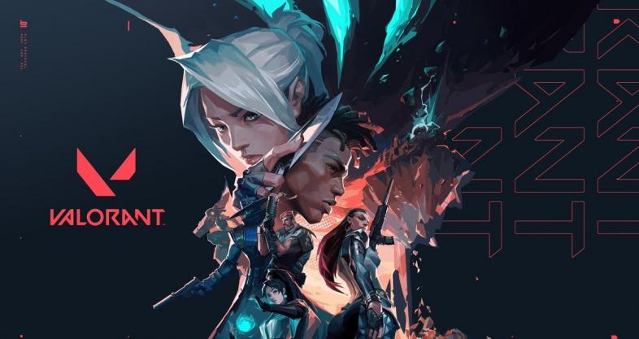

Overview
Valorant is a tactical first-person shooter game developed and published by Riot Games. Set in a near-future Earth, players assume the control of agents, each equipped with unique abilities. The game emphasizes strategic gameplay, precise shooting, and team coordination.
Gameplay
Tactical Shooting
Valorant combines the precise shooting mechanics of traditional FPS games with unique agent abilities. Players must master both to succeed in competitive matches.
Agent Abilities
Each agent has a set of abilities that can be used strategically to gain an advantage over the opponents. Proper use of abilities can turn the tide of a match.
Competitive Play
The game offers a ranked mode where players can test their skills against others. Climbing the ranks requires teamwork, communication, and consistent performance.
Graphics
Visual Style
Valorant features a clean and stylized visual design that enhances gameplay clarity. The graphics are optimized for performance, ensuring smooth gameplay even on lower-end systems.
Multiplayer
Team-Based Gameplay
Valorant is built around 5v5 matches where teamwork and strategy are key. Players must communicate and coordinate to outplay their opponents.
Regular Updates
Riot Games regularly updates Valorant with new agents, maps, and game modes, keeping the game fresh and engaging for the community.
Community and Updates
Active Community
Valorant has a vibrant community of players, streamers, and content creators. The game’s community is active on platforms like Twitch and YouTube, sharing tips, highlights, and strategies.
Developer Support
Riot Games is committed to supporting Valorant with regular updates, balance changes, and new content, ensuring a dynamic and evolving game experience.
Reception
Critical Acclaim
Valorant has received positive reviews for its gameplay mechanics, strategic depth, and competitive balance. It is praised for combining the best elements of tactical shooters and hero-based games.
Player Experience
Players appreciate Valorant for its skill-based gameplay, variety of agents, and the constant updates that keep the game fresh. The ranked mode offers a rewarding experience for competitive players.
Pros and Cons
- Strategic Gameplay: Combines precise shooting with tactical abilities.
- Regular Updates: Frequent new content and balance changes.
- Optimized Performance: Runs smoothly even on lower-end systems.
- Steep Learning Curve: Requires time to master agent abilities and shooting mechanics.
- Reliance on Team Play: Success heavily depends on team coordination and communication.
- Limited Game Modes: Main focus on competitive play, fewer casual modes.
Conclusion
In conclusion, Valorant offers a compelling mix of tactical shooting and unique abilities, creating a strategic and engaging gameplay experience. With regular updates and a supportive community, it remains a top choice for competitive FPS players.